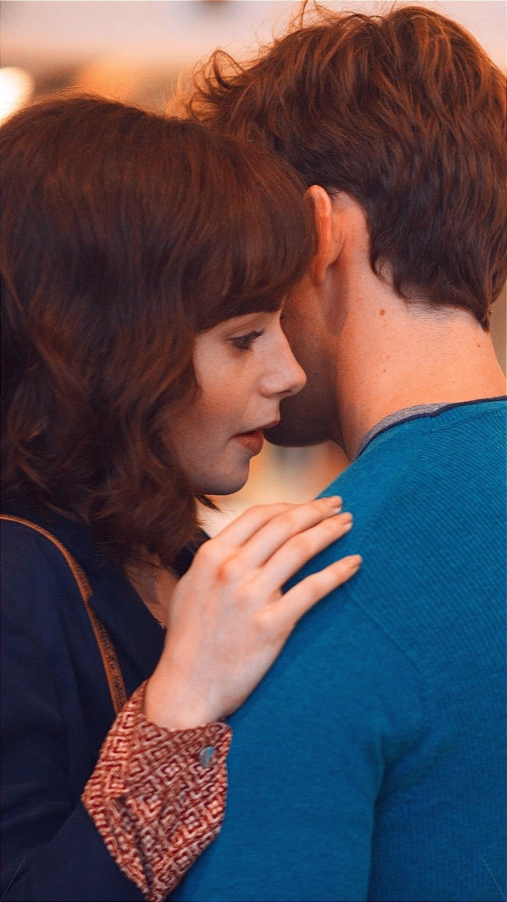
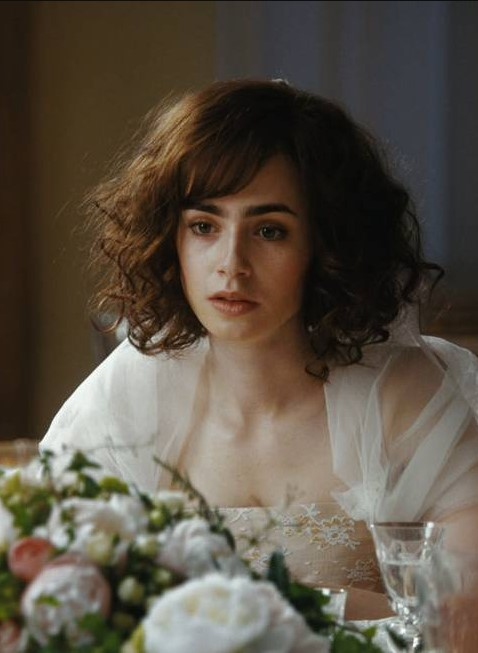

Simplemente Acontece
também conhecido como "Love, Rosie"A história do filme gira em torno de Rosie Dunne (interpretada por Lily Collins) e Alex Stewart (interpretado por Sam Claflin), que são melhores amigos desde a infância. Ao longo dos anos, eles enfrentam diversos desafios e passam por momentos difíceis, mas nunca conseguem admitir seus verdadeiros sentimentos um pelo outro.
É baseado no romance de mesmo nome da autora irlandesa Cecelia Ahern. O filme foi dirigido por Christian Ditter e conta a história de Rosie Dunne (interpretada por Lily Collins) e Alex Stewart (interpretado por Sam Claflin), que são melhores amigos desde a infância. Lançado em 2014, esse filme britânico de comédia romântica, baseado no romance de Cecelia Ahern, nos leva a uma jornada.
A trama acompanha Rosie e Alex enquanto eles lidam com os desafios da vida, incluindo relacionamentos, carreira e responsabilidades familiares. Embora estejam claramente apaixonados um pelo outro, circunstâncias inesperadas e mal-entendidos os impedem de ficarem juntos romanticamente.
O filme é narrado ao longo de várias décadas, mostrando os momentos importantes da vida de Rosie e Alex. Mesmo com separações e escolhas diferentes, eles sempre encontram seu caminho de volta um para o outro como amigos leais.
É uma história emotiva e cativante que mostra como a vida pode nos levar por diferentes caminhos, mas o destino muitas vezes nos reserva surpresas inesperadas.
- Direção: Christian Ditter
- Roteiro Juliette Towhidi
- Elenco: Lily Collins, Sam Claflin, Christian Cooke
- Título original Love, Rosie
"Simplemente Acontece" é uma história cativante sobre amizade, amor e o poder do destino. O filme é conhecido por sua atmosfera romântica e emotiva, além de seu elenco carismático.
O filme aborda temas universais como amizade, amor, coragem e a importância de seguir nossos corações. Através de um formato narrativo único, "Simplesmente Acontece" acompanha a jornada de Rosie e Alex ao longo de várias décadas, mostrando como o destino muitas vezes interfere em suas vidas, adiando o inevitável encontro romântico que todos esperam.